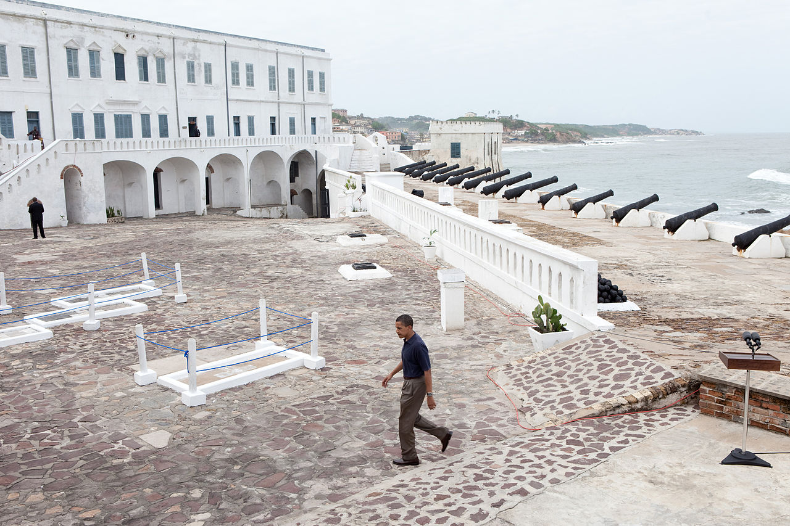
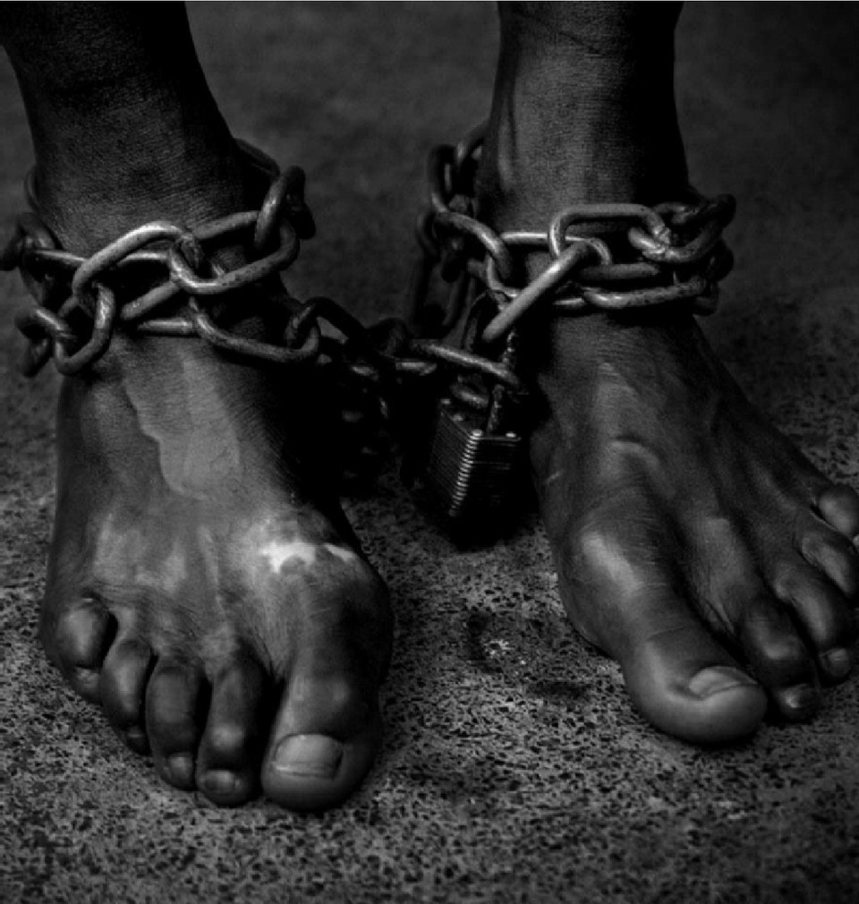
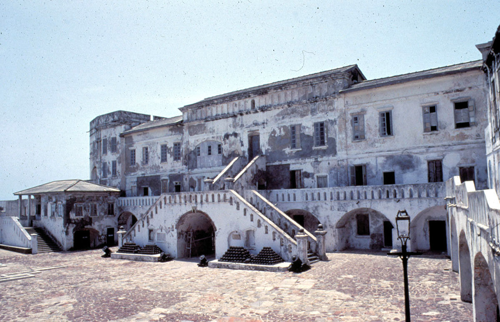

Open hours: Available 24/7
Here at Tripafrica, we treat our clients to an 8 day fun-packed trip of exploring the most amazing parts of the Ghana with trails of the transatlantic slave trade. 8days is enough amount of time to explore and experience the amazing historical resources of this beautiful parts of the country called Ghana. To get a full-blown experience of the beauties of the country, the tour will begin from the nation’s capital of the Ghana then we explore and amuse ourselves all the way alone the coastal regions and ending the tour in Accra, the country’s capital. This trip will take you to three regions where you get to tour the infamous castles; known for temporary housing slaves during the Trans-Atlantic Slave Trade, you get to learn more about slavery, how they were treated in these castles and other destinations that have links with the slave trade.

Upon arrival at the Terminal 3 of Kotoka International Airport, Accra-Ghana, You will be met by a staff and sent to your hotel.

After breakfast, you will begin your tour of the hustle and bustle of the metropolis of Ghana’s capital. Your first stop will be to the W.E.B. Centre for Pan-African Culture. Dr. Dubois, A Pan-Africanist accepted an invitation from Dr. Kwame Nkrumah(Ghana’s first President) and the task to of researching and compiling the Encyclopedia Africana.
The center consists of a museum; which contains memorabilia and Dr. Dubois’s personal library, the open air theatre; where intellectual seminars and workshops were held. In addition is the Marcus Garvey Guesthouse at the center. You will be treated to a guided tour of this memorial center. Afterwards you will depart to Kwame Nkrumah Memorial Park. There, you will make stops at some side attractions including; the Independence Square and Mausoleum.
Continue to Osu Castle which was the administrative seat of the colonial governor and later became the seat of Government for Ghanaian Presidents until recently when the Jubilee House(Current Seat of Government) was built and the seat of Government relocated there. End your tour with a visit to James Town which is regarded as Old Accra.
Overnight in Accra
Depart to the Central Region after breakfast. If the hustle and bustle of Accra mars the peaceful tour you intend to have in Ghana, wait till you leave that behind as you enter a new and calmer region where you will see the rapid transformation. There will be a quick detour to Assin Manso Ancestral Slave River Site. This facility houses the river that served as the last bath for the slaves before their shipment overseas. You will also witness an Ancestral Graveyard at the facility. Continue to Cape Coast Salve Castle, a UNESCO World Heritage Site. The Cape Coast Castle was built in 1653 by the Swedish and later taken over by the British. It is regarded as the second biggest slave castle in Ghana and the most visited. Afterwards, you will depart to your hotel for your overnight.
Overnight in Elmina

After a restful night, you will take your breakfast and begin with a tour of this colonial community. Today’s tour will comprise of both cultural and historic experience. You will be treated to a tour of Elmina visiting most of the notable places within the township. You will have the opportunity to visit the Elmina Slave Castle(St. George Castle) which is regarded as the biggest and oldest slave castle in Ghana. It is also a UNESCO World Heritage Site. Continue to a fort close by; Fort St. Jago. It is located on a hill top overlooking the Elmina Township. Return to your hotel afterwards. You have the rest of the day to yourself to relax at your beach front hotel.
Overnight in Elmina
After breakfast, you will depart to Beyin in the Western Region. Upon arrival, you will enjoy a beautiful experience in a canoe on the Amansari Lake to Nzulezu. The whole community of Nzulezu is built on top of the Amansari Lake. Your will be treated to a tour of this unique village. Afterwards, you will return to Beyin where you will be visiting Fort Appollonia. Fort Appollonia was built by the English merchant. Continue to your hotel to relax after today’s tour.
Overnight in Axim
After breakfast, you will visit Fort St. Anthony(Fort Santo Antonio). It was built by the Portuguese in 1515 near Axim. Afterwards you will visit Fort Batenstein in Butre. After your tour of this fort, you will depart to a beach to relax for the rest for the day.
Overnight in Busua.
After breakfast, you will depart to Dixcove, a nearby community to tour another fort. Fort Metal Cross, originally Fort Dixcove, was a military structure in Dixcove. After your tour of this fort, you will depart to Accra but make a detour to Kakum National Park. It is a protected area of rainforest and home to endangered mammals such as forest elephant and monkeys.
There is a canopy walkway the most preferred which hangs 30metres above the ground. You can also choose to enjoy a nature walk through the forest with an experienced park guide. Continue to Accra after your tour.
Overnight in Accra.
Checkout from your hotel to visit a shopping center in Accra. You will make a stop to the Accra Arts Centre. It is a large market with different kinds of artefacts. Be ready to experience how shop keepers and hawkers convince clients to buy their products and also be prepared to bargain with sellers so that you can buy things at very low prices. Afterwards if there is time, you will depart to a recreational center until your transfer to the airport to depart home.
End of tour.
Have you been on this tour before, please leave a comment describing your experience